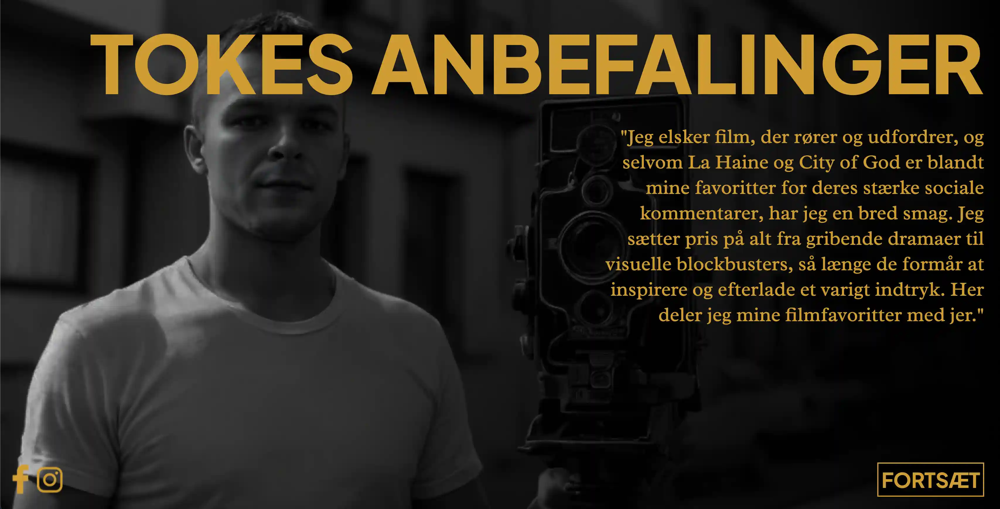

TEMA 3
EMNESITE

I tema 3 blev vi introduceret til grundlæggende UX/UI, herunder værktøjer som moodboard, styletile, Figma, wireframing-metoder og forskellige testmetoder. Det var første gang, vi skulle
skabe et emnesite helt fra bunden ved hjælp af disse metoder. I den første fase af arbejdet udarbejdede jeg et dokument i Figma, hvor jeg lavede et moodboard, en styletile, en wireframe og
en prototype. Derefter gennemførte jeg en 5-sekunders test og en tænkehøjt-test for at få feedback på, hvad der fungerede godt, og hvad der kunne forbedres. Til sidst begyndte jeg at kode
mit emnesite og følge prototypen i Figma. I løbet af dette forløb var det første gang på semesteret, at jeg skulle forholde mig til gestaltlove og designkonventioner og få en forståelse for
deres betydning for brugervenlighed.
Klik på billedet for at få adgang til projektet!